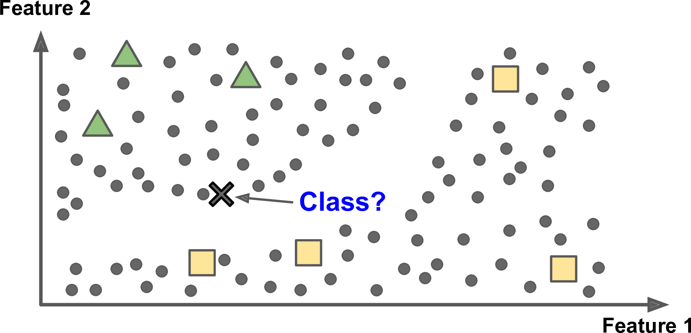

10.4 Clustering and Semi-Supervised Learning
Use unlabeled structure together with a few labels.
These notes walk through the lecture slides. The original deck is unchanged; use (slides) on the course hub if you want that PDF.
Figures and notes follow Géron, Hands-On Machine Learning; Deisenroth, Faisal, and Ong, Mathematics for Machine Learning; and Theodoridis.
1. Central idea
A little labeled data, a lot of unlabeled. Use the unlabeled geometry to help the supervised model.

Method. Cluster unlabeled points by similarity. Spread the few labels across each cluster. Train on the bigger labeled set.
Why. Unlabeled rows are cheap. Labels are not. The extra labels can make the supervised model more stable.
Applications: text, images, anomalies, customers — anywhere labels are scarce.
2. -means for the labels
- Cluster. Run -means on the unlabeled points. Each cluster has a centroid.
- Label the centroids. Majority vote among labeled points in the cluster, or copy the labels of the labeled points nearest the centroid.
- Propagate. Every point in the cluster gets the centroid’s label.
- Augment. Original labeled rows plus the newly labeled cluster members.
- Train. Fit a supervised model (classification or regression) on the augmented set.
- Check. Score on a held-out validation or test set. The question is whether the propagated labels helped on unseen data.
Practice
-
After you label the centroids, who else gets a label, and from where?
-
Majority vote versus nearest labeled point: what is the difference when you tag a centroid?
-
Why does this pipeline help when labels are expensive?